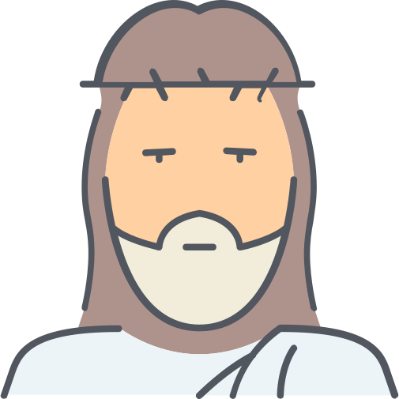

Curiosidades del mundo y anecdotas de la epóca antigua
Desde el principio de la tierra hasta el día de hoy existen misterios y curiosidades que la humanidad no ha podido encontrar explicación.
Por está razón dedicamos este canal para subir contenido acerca de estos eventos ocurridos en la epóca antigua.
Fotografías de curiosidades de la historia
Algunos de nuestros temas

La vida nocturna en la antigua Roma
Espías y códigos secretos de la antigüedad
Los castigos en la Edad Media

Los secretos de la vida de Jesús